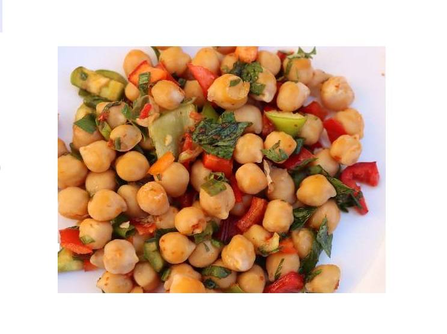

Hummus salad
The method of making chickpeas salad with tahini gives you a dish that contains many elements that provide the body with energy,
vitamins and various minerals. You have options to get a plate of chickpeas salad with tahini.. Get to know them.
Hummus sald amounts
A cup of boiled chickpeas .
Half a cup of tahini.
A quarter cup of oil.
quarter cup of lemon juice.
Finely chopped garlic.
Salt and black pepper to taste.
Chopped parsley for garnish.
How to prepare it
Put the boiled chickpeas, tahini and water together in an electric blender.
Put the mixture in a serving dish, and decorate it with chopped parsley.
Progress and congratulations and recovery.
Add the chicken stock and the bechamel sauce and bring to a boil, then leave the mixture on a low heat for two minutes.
Modus operandi of chickpeas salad with tahin.
